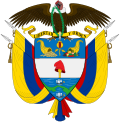
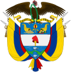

HISTORIA
La cultura de Colombia es un mosaico rico y diverso que refleja la mezcla de influencias indígenas, africanas y europeas que han moldeado el país a lo largo de su historia.
Esta diversidad se manifiesta en sus tradiciones, música, gastronomía, festividades y expresiones artísticas.
En primer lugar, la música colombiana es un aspecto fundamental de su identidad cultural. Géneros como la cumbia y el vallenato son originarios de Colombia y representan la fusión de ritmos indígenas, africanos y españoles. La salsa también tiene un lugar destacado, especialmente en ciudades como Cali, conocida como la capital mundial de la salsa. Además, la música llanera, con sus instrumentos tradicionales como el arpa, el cuatro y las maracas, refleja la vida en las regiones rurales de los Llanos Orientales.
La gastronomía colombiana es igualmente diversa y varía según la región. Platos emblemáticos como la bandeja paisa, el ajiaco, el sancocho y las arepas muestran la riqueza de ingredientes locales y técnicas culinarias ancestrales. La variedad climática del país permite que haya desde frutas tropicales hasta productos de montaña, lo que se traduce en una alimentación muy variada y sabrosa.
Las festividades en Colombia son vibrantes y llenas de color. El Carnaval de Barranquilla es uno de los eventos culturales más importantes, declarado Patrimonio Oral e Inmaterial de la Humanidad por la UNESCO. Durante el carnaval, la ciudad se llena de desfiles, danzas y música que celebran las raíces culturales y la alegría del pueblo colombiano. Otras celebraciones importantes incluyen la Feria de las Flores en Medellín y la Feria de Cali.
El arte y la literatura colombianos también son reconocidos a nivel mundial. Artistas como Fernando Botero, conocido por sus figuras voluminosas, y escritores como Gabriel García Márquez, premio Nobel de Literatura, han llevado la cultura colombiana a un público global, mostrando la riqueza creativa del país.
En resumen, la cultura colombiana es una expresión vibrante de su historia, su gente y su territorio. La mezcla de tradiciones ancestrales con influencias modernas crea un patrimonio cultural dinámico que continúa evolucionando y sorprendiendo tanto a locales como a visitantes.